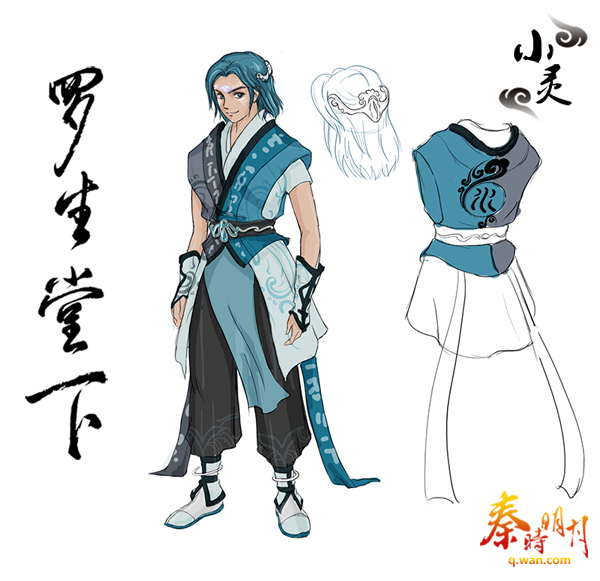
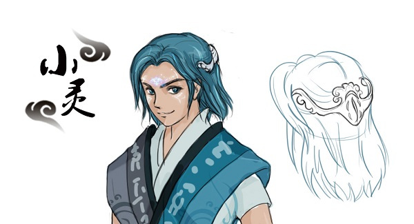

Thông tin mới về Demo 4
Đây là nhân vật mới xuất hiện trong demo 4 của tần Thời Minh Nguyệt có tựa là La Sinh Đường Hạ với nội dung chính là quá khứ của Thiếu Tư Mệnh. Nhân vật này, có liên quan trực tiếp tới thân phận hiện nay của Thiếu Tư Mệnh, là người giúp cho Thiếu Tư Mệnh tuy rất trẻ tuổi nhưng đã trở thành 1 trong 5 đại hộ pháp Âm Dương Gia. Cũng như Thiếu Tư Mệnh, Tiểu Linh là đệ tử Âm Dương Gia , nhưng lại là Ngũ Linh Huyền Đồng có tư chất cao hơn đệ tử bình thường rất nhiều
Linh Y Ngọc Bội, Nhất Âm Nhất Dương, La Sinh Đường Hạ, Thu Lan Trường Sinh là 16 chữ ẩn tang vô số bí mật của Âm Dương Gia, tất cả sẽ được tiết lộ trong demo4 này